Compressor parameters: Smoothing
Time smoothing can reduce the distortion inherent to compression, ideally to such an extent that this distortion becomes inaudible (except of course if the distortion is sought as an aesthetic effect). To do this successfully, there are a few things to consider, and we'll take a look at some of them. Understanding the content of this page is certainly not sufficient to make you a mastering expert, but necessary.
For the examples here, a 1kHz, -30dB tone of 600ms was used, mixed with:
- a click at 100ms
- a 5kHz tone burst at 200ms lasting 100ms
- a 100Hz tone burst at 400ms lasting 100ms
all peaking at -10dB.
Using Audacity's compressor, starting with all smoothing set to zero, a threshold of -20dB and a ratio close to infinity:
- 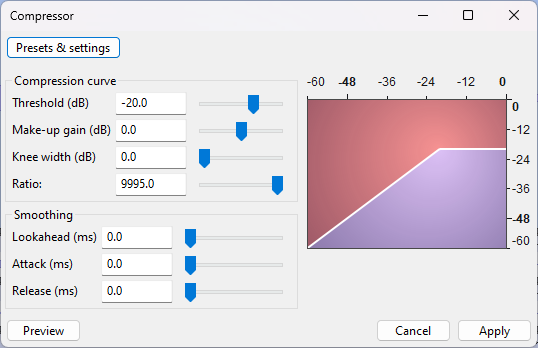
Then tweak only the smoothing parameters, leaving the compression curve parameters unchanged.
Smoothing parameters
Configuration name Lookahead (ms)
Attack (ms)
Release (ms)Output (dB scale) Spectrum Additional images Comments Bypassed N/A 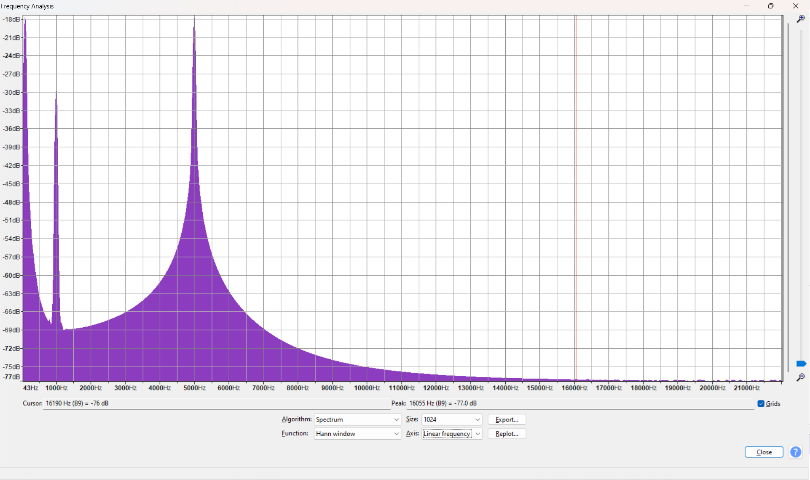 Three large peaks for each of the 1kHz, 5kHz and 100Hz tones is visible. (100Hz tone is on the very left.) No smoothing 0
0
0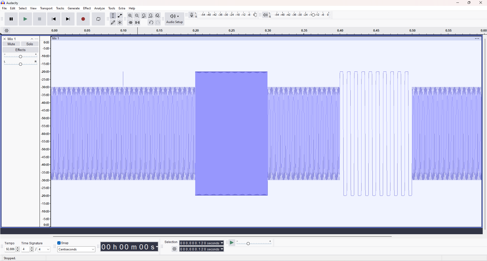 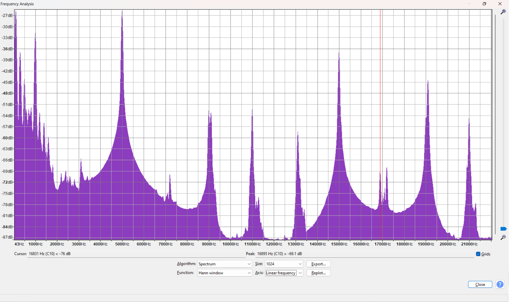 Hard-clipping at the -20dB threshold. All three tones now exhibit odd harmonics. Note that this also applies to the 1kHz tone, although its amplitude is below the threshold, because it is mixed with the other components: it is the only component whose odd harmonics coincide with the large peaks seen at 9, 11, 13, 17, 19 and 21kHz.
Just a short lookahead 1
0
0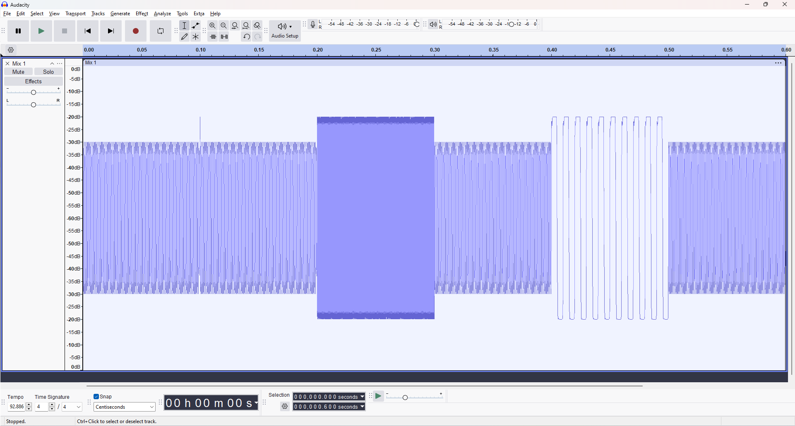 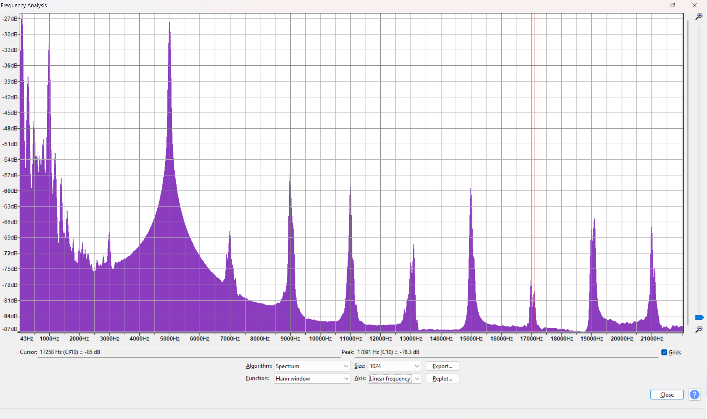 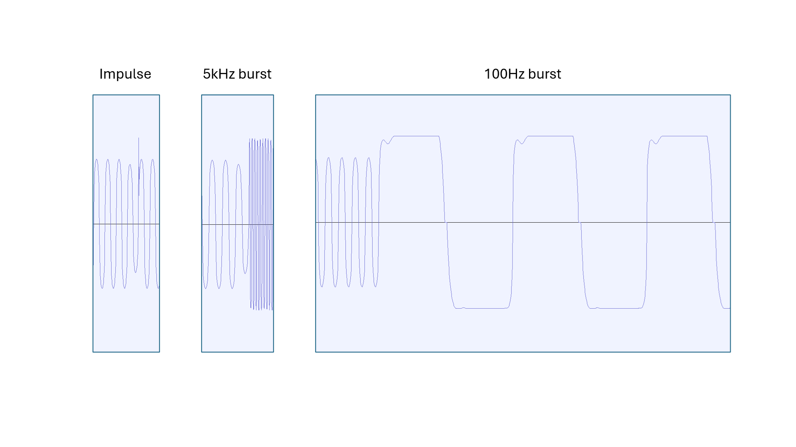 A 1ms lookahead by itself becomes effective in smoothing audio which doesn't have frequency components below 1kHz. You can see that the 100Hz burst is still very much a square wave, but the 5kHz burst, however, very much looks like a smooth sine wave (hardly visible on the picture). Remember that clipping of one component means clipping of all the rest, so while the 100Hz component gets clipped, so does the 1kHz tone that's mixed with it.
Consistently in the spectrum, the 100Hz tone still has its odd harmonics, the 1kHz tone has now less of them because clipped less often, and the 5kHz tone has almost none left.A longer lookahead 10
0
0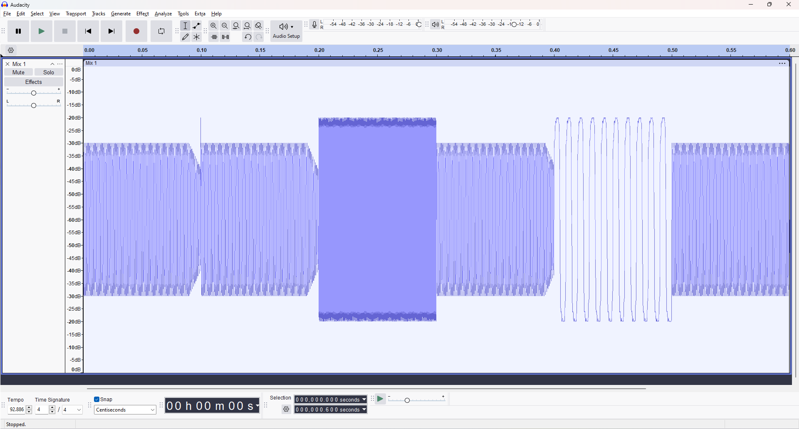 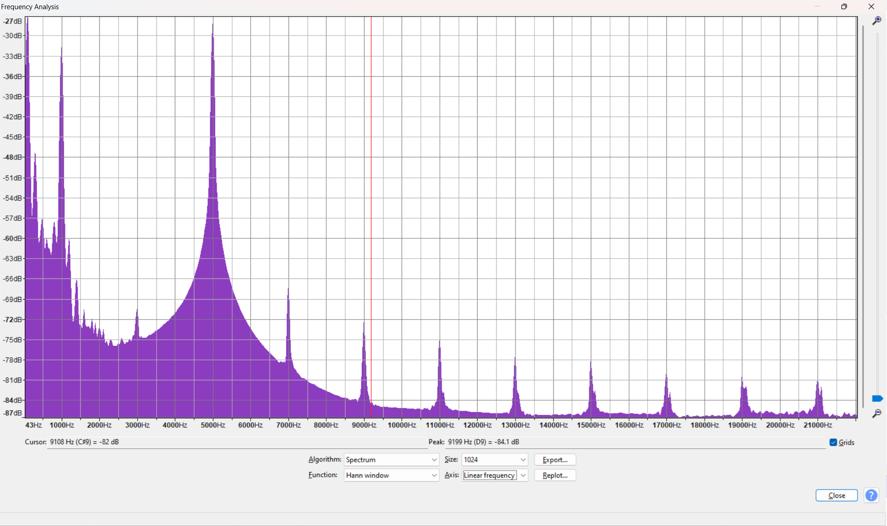 Now even the 100Hz tone becomes more like a sine wave. Its harmonics are reduced, and hence also those of the 1kHz tone. Just a short attack 0
1
0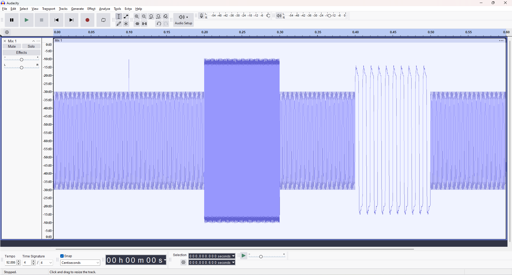 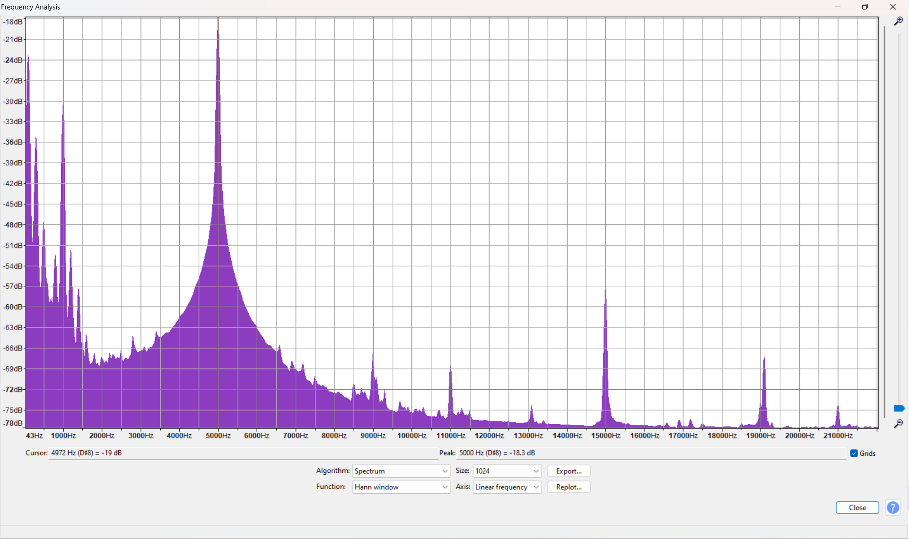 
Looking at the spectrum one might think that only just 1ms of attack time is a great smoother, but if you look at the waveform you'll see that barely any compression has been applied. There only is the side effect that the 100Hz wave shape gets modified, introducing distortion. The thing is that as soon as the level goes back under the threshold, since there is no release time, the attack state is reset instantly. The only kind of waveform such a setting would be efficient on is a wave whose absolute value is always above the threshold, such as a square wave. (Compressing a square wave sounds easy all right...) Attack and release only 0
1
10Now the relatively slow release allows to "maintain the pressure" while the tones alternate between positive and negative values. All waveshapes are better preserved, and harmonic distortion is almost gone. However, the attack time lets the signal overshoot. If the purpose of the compression is to maximize loudness, this overshoot is problematic. Adding some look-ahead can help... All three parameters 10
1
10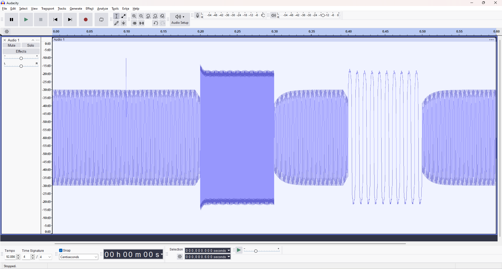 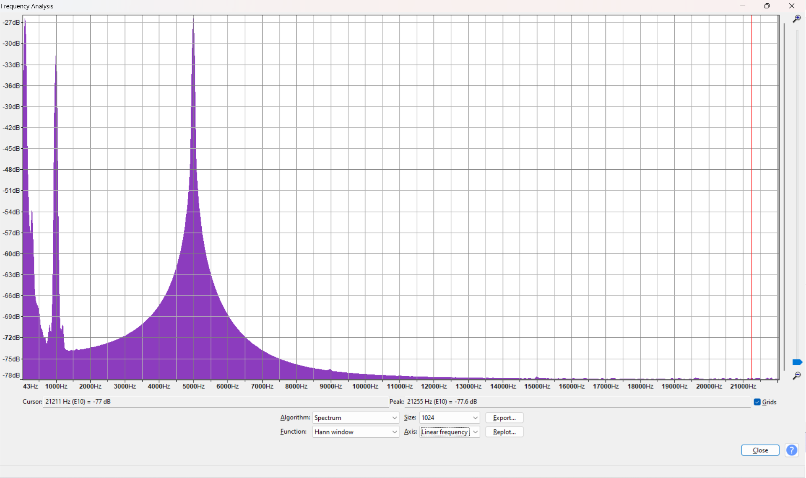 The spectrum looks just as clean as the previous one, but now the overshoot was reduced and we can add 5dB of loudness without additional clipping. Limiter-like settings 1
0
25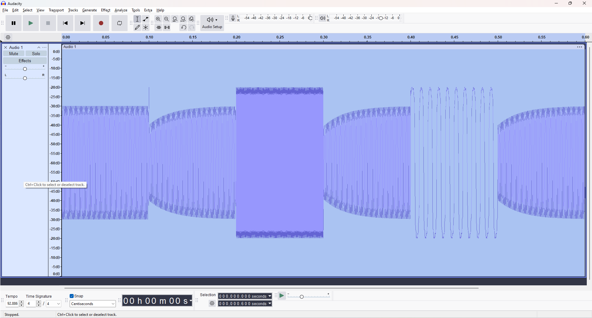 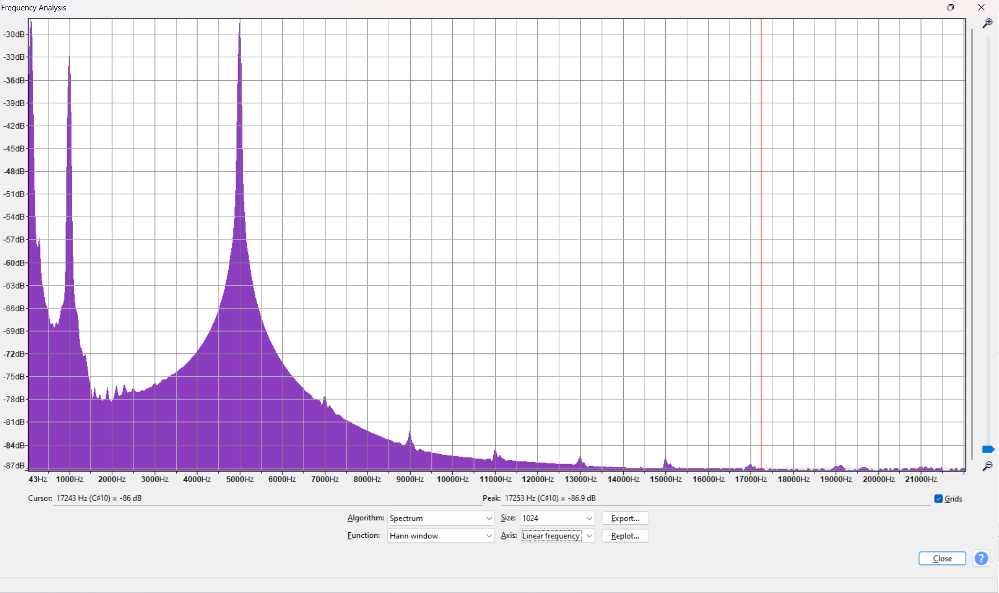 A limiter makes it impossible for the output to exceed a certain ceiling, which means attack has to be set to zero. Lookahead and release times can still be used efficiently together, though. With these settings, the spectrum is almost identical to the original, although we can now add 10dB of loudness without clipping. (The tiny odd harmonics are too low to be audible.)
{kind=link}
Take-aways
Attack
Attack leads to overshoot, and hence is more a setting for aesthetics than for loudness maximization. With attack, the envelope of a sudden, steady tone can become similar to that of a piano note. This is why it is said that attack adds punch.
Distortion is contagious
Distortion of a loud component leads to the distortion of all the signals it is mixed with, even if they are below the threshold!
Lower tones need longer lookahead and release
Lookahead and release become effective when their duration is longer than the period of the lowest-pitched (since distortion is contagious) frequency component of the mix that goes above the threshold. However, slow settings on fast-changing signals has other side effects (masking low-volume tones coming before (lookahead) or after (release) the louder tones), which is why compression of the individual tracks before mixing can help, and if this is not an option, maybe a multi-band compressor can.
Further reading
The Zita-DPL1 Quick Guide, which served as inspiration for this article.